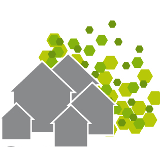
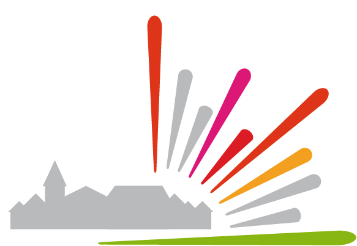

48 heures pour libérer une commune !
L'opération Libre est une initiative de 8 organisations travaillant autour des outils, licences, contenus et données libres. Elle a pour objectif de démontrer les opportunités de l'ouverture des données et contenus pour les communes à travers une mobilisation inédite sur un territoire pilote.
Avec la complicité de la commune de Brocas et de ses habitants, nous invitons les développeurs, cartographes, photographes, designers, traducteurs, vidéastes, professionnels ou en herbe et tous les curieux à nous rejoindre sur des animations (cartoparties, hackathon, wikiparties...) des formations (Openstreetmap, Wikipedia, Wikimedia Commons, Creative Commons...) et des ateliers de production et valorisation des données et contenus de la commune !
Tout le monde !
Même si ces animations regroupent beaucoup de spécialistes, toute personne intéressée peut librement participer.
Voici quelques actions accessibles à tous:
Brocas, 9h30-18h00 les 6 et 7 avril
Brocas est une commune française de 800 habitants située dans le département des Landes en région Aquitaine.
La commune est engagée dans un chantier d'ouverture de données et contenus sur opendata.brocas.fr mais il reste beaucoup à faire.
Donnons-lui un coup de pouce !
|  | Initiations
|
|  | Animations
|
Le programme est en cours de coproduction avec les participants sur le Wiki.
Découvrez et proposez tous les projets ici !
Cette animation est la continuité d'un cycle de trois actions en faveur du développement des initiatives d'ouverture des communes
Comment venir ?
Le plus adéquat, en train (TER + TGV)
Mont de Marsan (navettes envisageables)
Par la route (autoroute A 65 - sortie 3)
Si vous avez des questions, vous pouvez nous joindre par email à contact@operation-libre.org ou sur les réseaux à @operationlibre

Ils contribuent à valoriser les données.
Et vous? Ajoutez votre structure dans le wiki.
Quebec Ouvert pour la base de ce site
Emma Livet pour les logos des barcamps et conférences
Claudine Chassagne pour la base du programme de conférence
Site et logo réalisé par Samuel Goëta (Open Knowledge Foundation France) et Claire Gallon (Libertic)